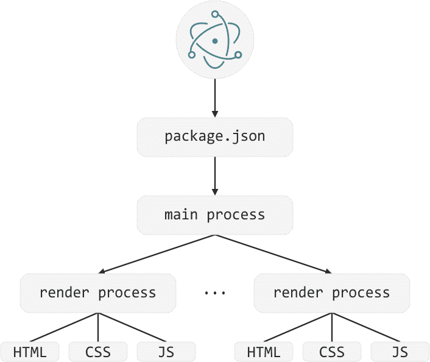
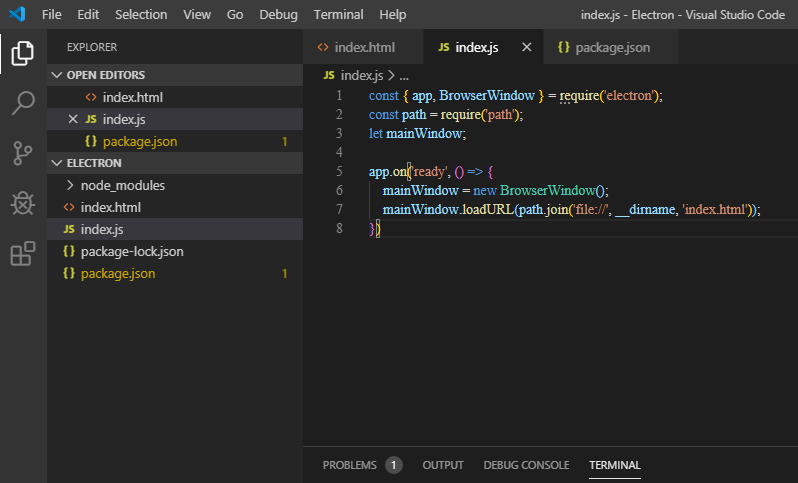
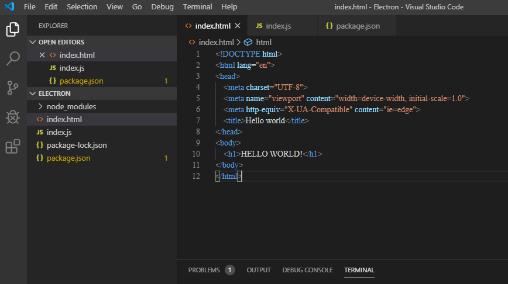
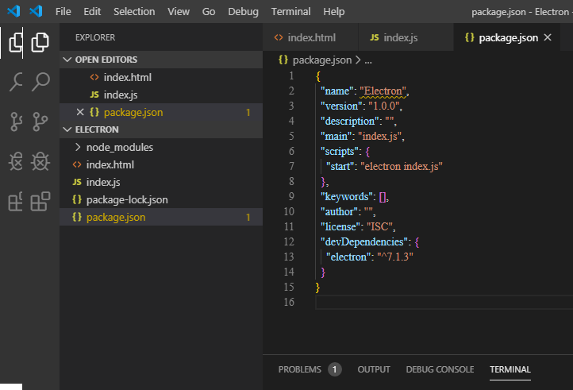
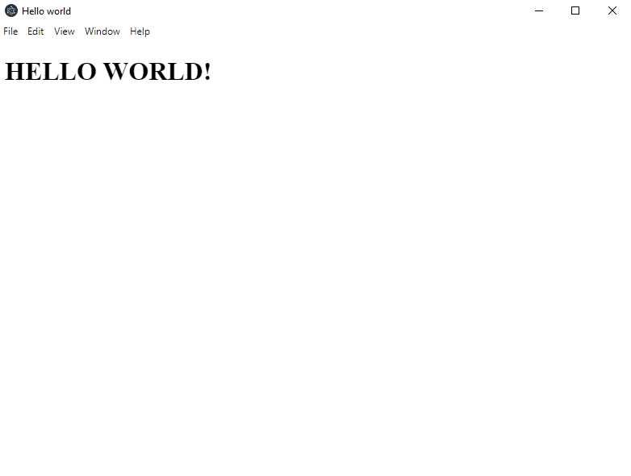
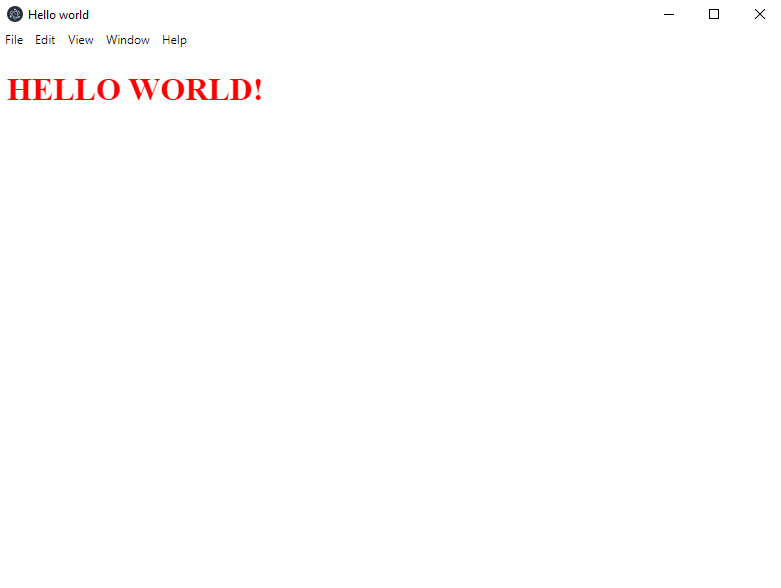
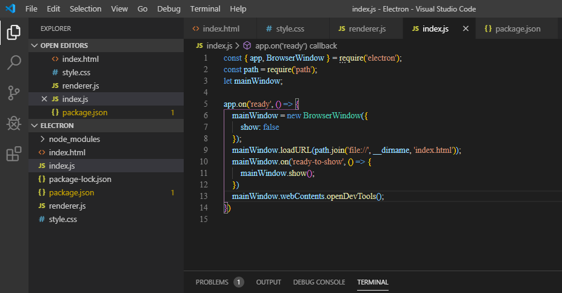
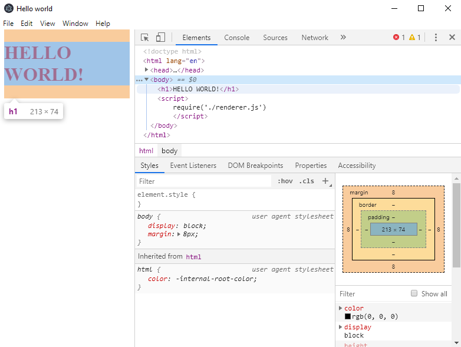

Electron is an open source project supported by GitHub and the community.
Electron is a library that you can use to write desktop applications using html / css / javascript.
These applications can be packaged under Windows / Mac / Linux and delivered via Windows / Mac-stores.
Where Electron was used?
There are created a lot of programs based of Electron, such as:
A text editor Atom
Visual Studio Code
Mancy REPL console for Node.js
Meteor.js frameworks
the Slack chat client application
Skype
Discord
the WordPress desktop client
...
Why desktop apps are useful to create?
Possibility to work with materials offline
Possibility to interact with the file system
Possibility to connect printers, USB devices
Using desktop applications is more familiar to users.
Have the using Electron some limitations?
It will not build when used an older operating systems (less than Win7 / MacOS 10.9 / Ubuntu 12.04).
You should not write browsers and programs that use a lot of native things
If the disk space is limited
What does Electron consist of?
Electron integrates Chromium to work with UI
Node.js for working with the file system and network
A set of native modules for working with the operating system
Electron consists of two types of processes
Main
Renderer
These processes run in parallel.
The memory and process resources are isolated from each other.
Main is a Node-like process.
It is responsible for the application life cycle (opening and closing it)
for integration with the OS, and responsible for creating Renderer processes.
Renderer process - it is the browser window in your application (your UI)
There can be several of these processes - and they are completely independent

The Electron application processes' behavior are like browser
First, the browser starts and then the tab opens.
Each tab is like one Renderer process in Electron.
But if you close all the tabs, then your chrome remains running and you can still open or close the tabs or completely close the browser
Since the processes are completely isolated from each other and are responsible for various tasks, for interaction they use IPC.
IPC is an inter process communication module that is needed for communication between processes:
IPC is an instance of the Event Emmiter class. It provides several methods so you can send and subscribe to messages from Renderer / Main processes.
So, let's create the first program using Electron!
First, type: "npm init -y" in terminal to create dependencies
Then, type: "npm install electron --save-dev" to install Electron app
Let's create index.js file and type the code to create program window. (it wll do the main process)

We have already connect the html file with index.js, so now we need to create html file.

In package.json name command for running program

So, now we can start the first program created by Electron
Just type in terminal command: "npm run start"

We can create css file and make connection with html file the same way as in all web projects.

The Electron is based by Chrome and we can see it then we open DevTools in our program. We can do it by code in index.js file.


We can create the other js file (it will do the renderer process) and connect it with html by typing in script tag: "require('./other-script.js')"
These js files we can create a lot. We using this other js file the same way as in all web projects.
Finally, we created the simple electron program.
As you can see it is only the basic method.
For more deep study of Electron you can browse Electron courses.
The positive side of Electron:
Work with the Web: HTML, CSS, JS - Web as UI
Chrome only. Chrome Devtools *
Development speed
Latest browser features
Is free!
Does not require knowledge of C ++, Swift
The negative side of Electron:
Node + Chrome require. Project Weight (100mb)
Even a simple Hello World will weigh a lot
Rendering processes create threads (eat all the memory)
Autoupdater for Linux platform
The conclusion:
You don't need to know C++ language to create Desktop apps
If you can create sites, you can create a native desktop application, using Electron.